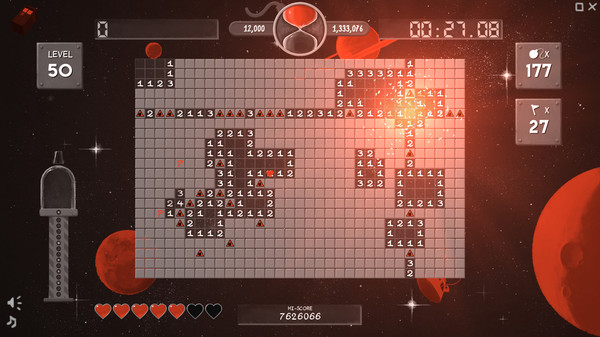
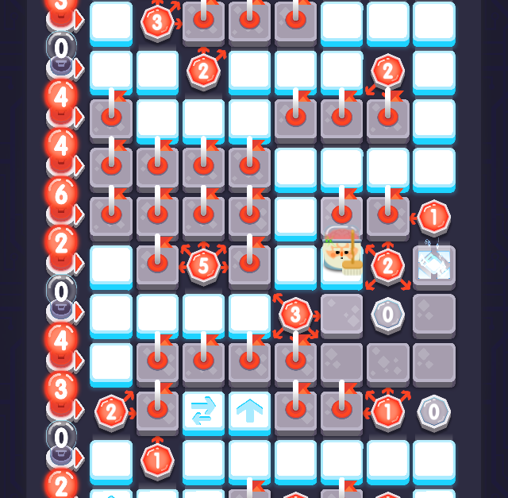

Le studio RedFire a démarré par pur hasard en Juin 2015 lors d'une discussion sur un forum.
Les utilisateurs n'arrivaient plus à jouer à Démineur sur Windows 10, et donc la communauté a développé un nouveau jeu qui est visuellement très réussi.
Le jeu a eu plus de succès que prévu, car il rajoutait également de nombreuses fonctionnalités : détection radar des mines, appel à un ami pour débloquer une case, scoreboard dans les forums, records de temps, palliers à plusieurs étages avec boss, etc.
Fort de son succès, les développeurs enrichissent encore le logiciel et le commercialisent sur Steam et le jeu devient très populaire.
La communauté gagne des fans anglophones, et l'entreprise grandit et possède maintenant un catalogue riche ainsi que 5 développeurs de tous les continents.
L'entreprise se développe également sur PS4 et Switch par la suite.
